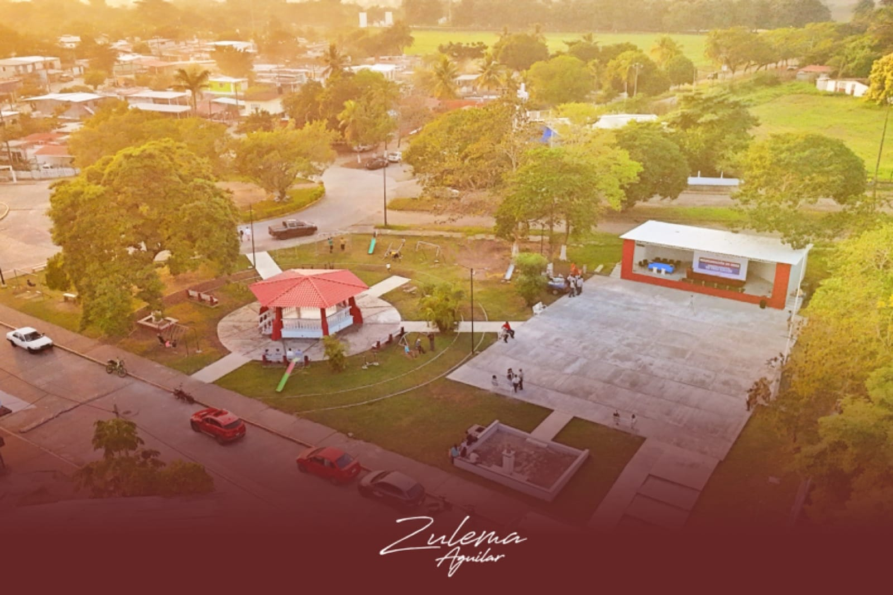
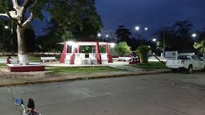

Sitios de interés de la Colonia Adolfo Ruíz Cortinez
(Colonia Obrera)
Tres Valles Veracruz.
Bienvenidos al sitio web dedicado a los puntos de interés de la Colonia Adolfo Ruíz Cortines, ubicada en Tres Valles, Veracruz. Este espacio tiene como objetivo resaltar los lugares más representativos de la colonia, que fomentan la convivencia, el esparcimiento y el desarrollo comunitario.
Parque
La colonia cuenta con espacios recreativos como el Parque de la Colonia Obrera, un area verde que sirve como punto de encuentro para la comunidad.
El Parque de la Colonia Obrera, ubicado en la localidad de Colonia Adolfo Ruiz Cortines en Tres Valles, Veracruz, ha sido objeto de una reciente rehabilitacion integral que ha transformado este espacio en un lugar mas agradable, seguro y funcional para la comunidad.

Caracteristicas del Parque
La rehabilitacin del parque incluye las siguientes mejoras:
Foro de usos multiples: Renovado para albergar actividades culturales y recreativas.
Quiosco: Restaurado como punto central del parque.
Bancas nuevas: Instaladas para mayor comodidad de los visitantes.
Sistema de alumbrado: Mejorado para garantizar la seguridad durante las horas nocturnas.

Estas mejoras han convertido al parque en un espacio ideal para eventos comunitarios, reuniones familiares y actividades al aire libre, fortaleciendo el tejido social de la colonia.
Unidad
La Unidad Deportiva Jose AÅngel Ponce Garcia se encuentra en la Colonia Adolfo Ruiz Cortines, tambien conocida como Colonia Obrera, en el municipio de Tres Valles, Veracruz. Este espacio fue inaugurado como una instalacion publica destinada a promover la actividad fisica y el deporte entre los habitantes de la comunidad.
Inauguracion
19 de julio de 2021
Estado
A pesar de su proposito inicial, la unidad deportiva ha enfrentado desafios en su mantenimiento. Segun reportes,a mas de un año de su inauguracion, el lugar se encontraba en condiciones de abandono, sin recibir el cuidado necesario para su adecuado funcionamiento. Esta situacion ha sido motivo de preocupacion para padres de familia y deportistas locales que utilizan el espacio para actividades recreativas y deportivas. Aunque actualmente con la nueva administracion de la seccion 9 la unidad deportiva a tenido cambios significativos mejorando las instalaciones y siendo asi un espacio completamente familiar en donde la comunidad no solo de la col. Obrera, si no personas de todo el municipio de tres valles y municipios vecinos acuden a fomentar el deporte, hacer ejercicio y a practicar actividades recreativas como el baile.
øQuien fue Jose Angel Ponce Garcia?
Jose AÅngel Ponce Garcia fue un destacado dirigente nacional del Sindicato de Trabajadores de la Industria Azucarera y Similares de la Republica Mexicana. Su liderazgo y contribuciones al sector azucarero fueron reconocidos a nivel nacional. Lamentablemente, fallecio en 2021 debido a complicaciones relacionadas con el COVID-19. todotexcoco.com
Ubicacion
La unidad deportiva esta situada dentro de la Colonia Adolfo Ruiz Cortines, una de las comunidades mas pobladas del municipio de Tres Valles. Esta colonia se encuentra a aproximadamente 3.3 kilometros al suroeste de la cabecera municipal.
Para conocer mas, les presentamos el siguiente video donde se muestra un evento cultural sobre el 15 de septiembre:
.jpeg)